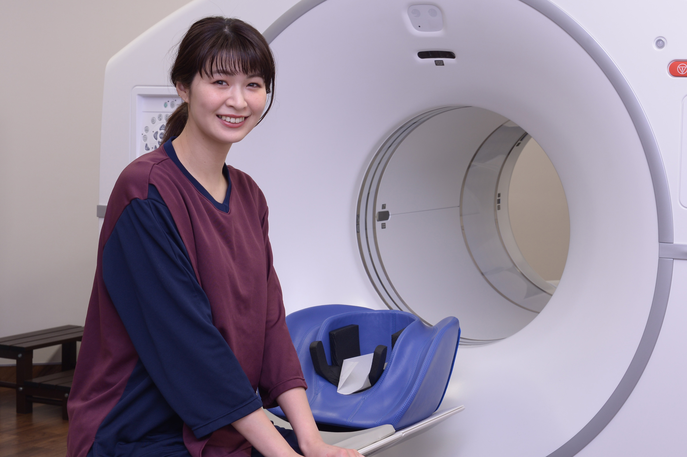
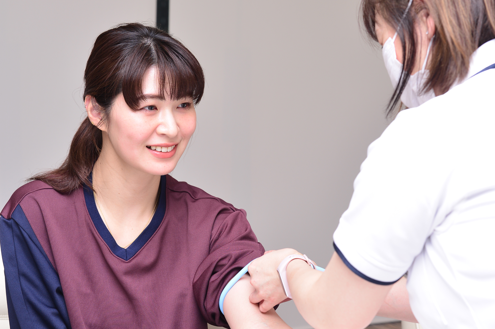
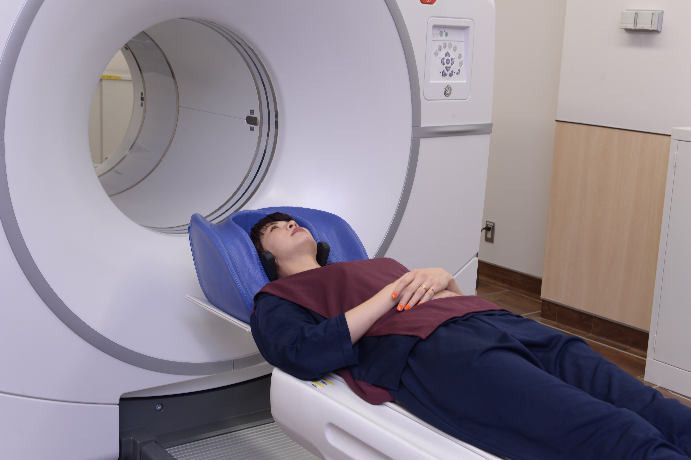
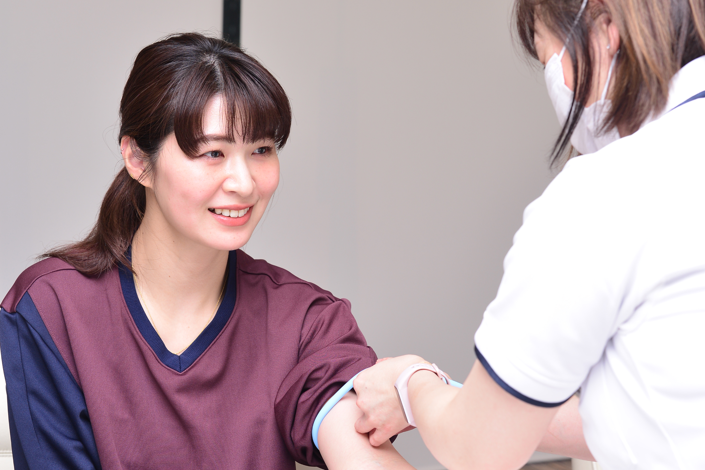
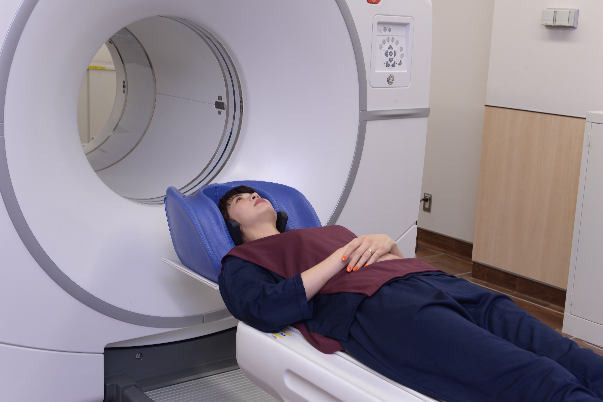

一般的な人間ドックの約2倍の検査項目
関⻄メディカルネットの
「メディカルサポート」で
「総合検診」を受けてみた。
元バレーボール女子日本代表木村沙織さん
一般的な人間ドックの約2倍の検査項目
関⻄メディカルネットの
「メディカルサポート」で
「総合検診」を受けてみた。
元バレーボール女子日本代表木村沙織さん
まるでカフェの居心地の良さ。
健診施設に対するイメージが変わった。
 




実は初めての人間ドックだったんです。待ち時間が長いイメージでしたが、すごくスムーズで驚きました。『あちらで座ってお待ちください』と言われて、座ろうと思ったら『次の検査はこちらです』と呼ばれるくらい（笑）。施設もすごく綺麗ですし、カフェにいるような居心地の良さでした。特に女性にとっては、過ごしやすくてうれしいですね。病院で健診を受けるとなると、コロナのこともありますし、ちょっと足を運びづらい印象がありましたが、健診専門のこちらのクリニックなら安心です。

現役の頃は、栄養士さんが管理した食事を三食とって、トレーナーさんが組んだメニューでトレーニングをして…と、とにかくバレーボールのために毎日を過ごしていました。それが引退してからは、自分自身ですべて管理しなくてはいけなくなった。最初の頃はバランスの良い食事を意識していましたが、夫婦でカフェの経営を始めてから、一気に食も睡眠も不規則になってしまって。その結果、夫が体調を崩してしまったこともありました。 仕事は楽しいけれど、さすがにこのままじゃいけないなと思って、『自分の体を整えよう』と意識を改め、生活習慣を見直すようになりましたね。
以前はお店が忙しくて、一日一食の日も多かったんですが、最近は栄養を考えながら食事を作り、朝昼晩しっかり食べるよう心がけています。現役時代に、栄養士さんから教えてもらったことを活かして、今の自分にちょうどいい量に落とし込むよう意識していますね。体って不思議だなと思うんですが、三食とるようになってから、お通じがしっかり来るようになりました。体の中から綺麗になっている感じがしてうれしいです。運動に関しては、トレーニングとまではいきませんが、お家でできる範囲でエクササイズをやっています。あとは、仕事現場が近いときは、普段運動らしいことをしていない分、できるだけ歩いて行くようにしています。今日も、お店からここまで40分くらい歩いてきました。

今回検査を受けてみて思ったことは、うつ伏せになるだけで乳がん検査が受けられるなんて凄いな！！てことです。乳がん検査で一番気になることは、検査に伴う痛みことだと思います。それが、痛みがなくあっという間に終わるなんて、こんなに嬉しいことはありません。検査室も高級感のある落ち着いた雰囲気で、リラックスできました。これなら毎年受けたいですし、友達にも是非勧めたいです。
ぜひ利用したいです。大阪に引っ越してきて4年ほど経ちますが、風邪を引いたり怪我をしたりしても、どこの病院に行ったらいいのかわからなくて。いわゆるかかりつけ医がなかったので、不安なことが何度かありました。でもこれからは、何かあったらこちらに相談すればいいと思うと安心です。
代表取締役社長 曽我 武司
もともとはキッチンカーをやりたくて、カフェを始めたんですね。コロナが落ち着いたら、キッチンカーでいろいろな場所をめぐりたいです。あとは、1年半くらい前からYouTubeをはじめまして、いろいろなことに挑戦しています。特に美容が大好きなので、美容グッズのお試しなどを配信していますが、今後は健康ネタも考えてみようかな。
年齢階級別死亡率（全部位2016年）出展：国⽴がん研究センターがん対策情報センター
メディカルサポートシステムのご案内
メディカルのプロと
理想的な連携を生む
サポートシステムです。
我が国では、「がん」「急性⼼筋梗塞」「脳卒中」が死因の過半数を占めており、これに「糖尿病」を加えた「四⼤疾病」が増えています。
⼀般の⼈間ドックでは、検査内容に不安があるなど、オプション検査を追加される⽅も多いでしょう。
その点、「メディカルサポートシステム」の総合検診の検査は約100項⽬あります。PET、MRI、MRA、CTなど先進的な検査機器による画像診断を複合的に組み合わせて、⾝体の隅々まで徹底的に検査を実施します。
さらに⼥性にはマンモグラフィ検査・乳房超⾳波検査・乳房触診・⼦宮細胞診も実施、加えて全国でも数台しかない乳房専⽤ＰＥＴ検査装置を導⼊するなど、⾝体の隅々まで徹底的かつ総合的に検査することで、より正確に⾝体の状態を把握し、四⼤疾病をはじめ、病気を早期に発⾒する確率を⾼めています。

総合検診後は、⼿厚くサポート致します。医療受診が必要な場合は、独⾃の医療ネットワークから、専⾨性が⾼く、治療実績豊かな医師や医療機関を紹介します。 チーム体制でしっかりと⽀えます。

さらに年間を通した健康サポートサービスでは、パーソナルドクターや看護師の資格を有するパーソナルアドバイザーが総合検診の結果や会員⼀⼈ひとりの健康状態に応じた⽣活習慣病の予防、健康維持、増進のサポートを⾏います。